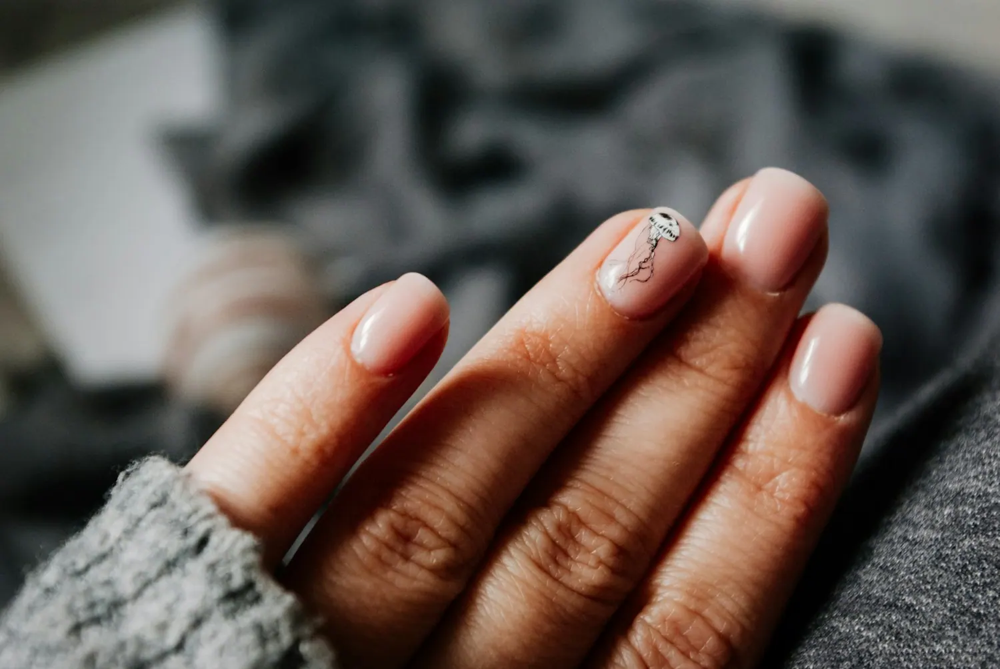
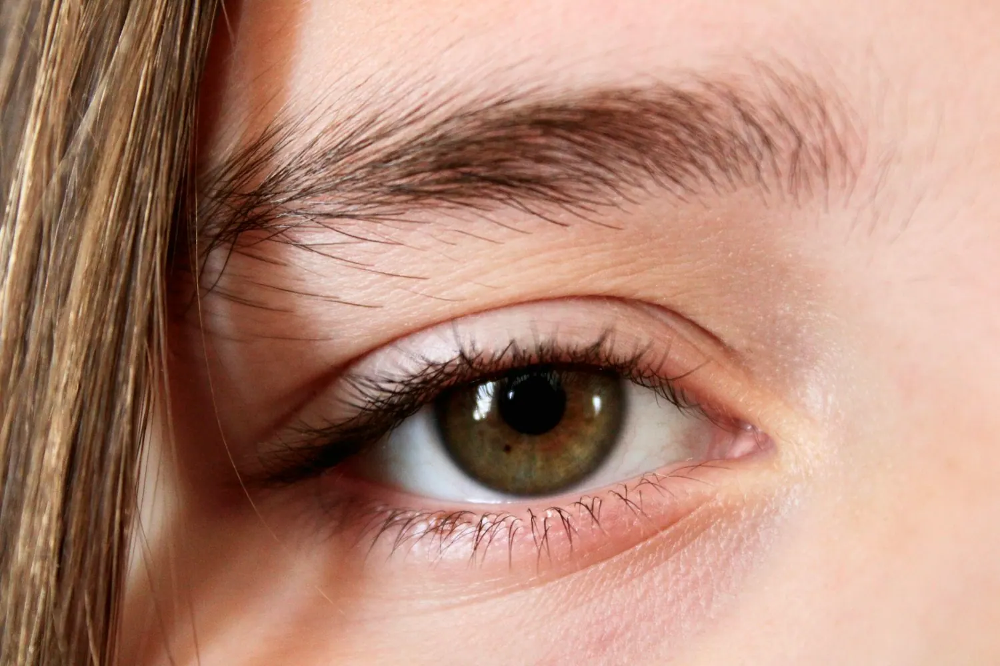

Сделала маникюр и брови за один визит — очень удобно. Покрытие держится третью неделю.
Студия красоты · Красноярск
Руки, брови, ресницы — в одной студии.
Студия красоты «Сатин»: маникюр и педикюр, брови и ресницы. Несколько процедур за один визит. Ежедневно с 10 до 22, запись онлайн.
01Цены
Услуги и цены
Цены «от» — точную стоимость мастер назовёт при записи: она зависит от длины и сложности работы.
- Комбинированный маникюр без покрытияот 1 700 ₽60 мин
- Снятие и маникюр с покрытием гель-лакот 2 250 ₽120 мин
- Снятие, маникюр, укрепление, покрытие гель-лакот 2 350 ₽120 мин
- Маникюр с наращиванием и покрытиемот 2 350 ₽150 мин
- Детский маникюрот 1 300 ₽45 мин
- Педикюр без покрытияОбработка пальцевот 1 800 ₽60 мин
- Педикюр с покрытием гель-лакот 2 250 ₽90 мин
- Полный педикюр с покрытием SMARTот 3 150 ₽120 мин
- Коррекция бровей без окрашиванияот 900 ₽30 мин
- Окрашивание ресниц краскойот 1 000 ₽30 мин
- Ламинирование нижних ресницот 1 000 ₽45 мин
- Наращивание ресниц MEGA VOLUME и CRAZY EFFECT3 200 ₽150 мин
02Атмосфера
Красота в деталях


03Почему мы
Почему «Сатин»
- 01
Всё в одном месте
Маникюр, педикюр, брови и ресницы: несколько процедур за один визит.
- 02
Стерильно — по-настоящему
Инструменты проходят полный цикл обработки, крафт-пакет вскрываем при вас.
- 03
Бонусы постоянным гостям
Баллы за каждый визит — в приложении студии, оплачивайте ими следующую процедуру.
- 04
Работаем до 22:00
Ежедневно с 10:00 до 22:00: записаться можно и после работы.
04Как это работает
От записи до результата
- Выбираете услугу и мастера
Цены и свободное время — на сайте.
- Получаете подтверждение
Напомним о записи накануне и за 2 часа.
- Приходите на Карла Маркса, 200
Первый этаж, ежедневно с 10 до 22.
- Запись на следующий раз — в один клик
Чтобы форма всегда выглядела свежей.
05Отзывы
4,9 из 5 — что пишут гости
Записываюсь через приложение, там же копятся баллы. Мастера аккуратные и внимательные.
Нарастили ресницы — естественно и красиво, как и просила.
06Вопросы
Частые вопросы
Можно ли сделать несколько процедур за один визит?
Да: маникюр, педикюр, брови и ресницы — в одной студии. Выберите нужные услуги и время на сайте.
Есть ли детский маникюр?
Да, детский маникюр — цена в прайсе выше.
Как записаться?
Прямо на сайте: выберите услугу, мастера и свободное время. Запись сразу придёт администратору.
Когда вы работаете?
Ежедневно с 10:00 до 22:00, без выходных.
07Контакты
Как нас найти
- Адрес
- ул. Карла Маркса, 200, КрасноярскПервый этаж, вход с улицы
- Часы работы
- Ежедневно10:00–22:00
- Телефон
- +7 900 000-00-00
ул. Карла Маркса, 200, Красноярск